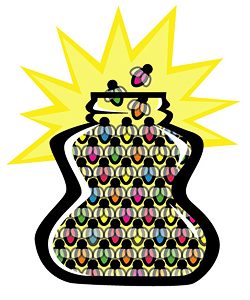

 image: Jennifer Chevais“It reminded me of an Yves Saint Laurent dress, of mermaids and of Christmas”
I had been alone in Paris for thirteen days. It took a dreary, uneventful morning for it to finally sink in that my family were hundreds of miles away. Although my first couple of weeks in the City of Light had been a song and a dance, I was craving human contact and conversation.
Like any other day, I left my little apartment on the rue de la Verrerie[1] to spend the day with my sole companion: Paris. Turning onto the busy rue de Rivoli, I crossed over, intending to head to the quai{ref2} but instead of trying to fight the traffic running around the Hotel de Ville, I turned left onto the place Saint-Gervais.
L’Eglise St. Gervais et St. Protais[3] stood before me; its flaking red doors beckoning me. I think I sought some kind of sanctuary. Despite the solitude, it was getting pretty noisy in my head.
For a moment I stood staring up at the immense church, then I pushed open the doors and stepped into the huge hall. On instinct, I turned left and tiptoed halfway down the stone-flagged pathway. I sat myself down on a bench looking into the nave of the church.
In front of me, on the opposite wall, was the most beautiful stained glass window I had ever seen: a riot of colour and pattern in an otherwise tranquil space.
At once I felt a flood of emotion: of respect for such a building steeped in history, of desire for something to believe in, of helplessness and above all, loneliness.
At 12.59pm I wrote in my journal: “I have been fine until now, I think.”
I felt a heightened awareness of not only the sounds that were around me, but the sounds that weren’t; the cacophony of horns and sirens I was so used to hearing had been drowned out and the voice in my head that kept reciting a perpetual to-do list had finally quietened.
In a way I wanted to hear the sound of my own wail reverberate around the cavities of this huge edifice. Instead I sat in silence and stared at the panes of glass and their pretty kaleidoscopic patterns, as though they might give me answers.
I couldn’t work out what I was looking at, but it reminded me of an Yves Saint Laurent dress, of mermaids and of Christmas.
Although I felt the cold emptiness of isolation, looking at that window I also felt warm inside; as though my body were a glass jar filled with glow worms. I sat for a while, gazing into the myriad of scarlet, gold and cobalt configurations. After a while I felt content; as though the colours had spoken to me and comforted me.
I don’t know what it was about that window, but I found solace there on that lonely day in Paris.
referenced works
- a street in the 4th arrondissement (the Marais) ↩
- French for quay. ↩
- The inseparable patron saints of Milan. Built in the sixteenth century (although churches have stood in this space since the 4th century), this church in the Marais was the official parish of the harpsichordists, organists, and wine merchants. ↩
location information
- Name: a bench on the left-hand side of the church, L’eglise St. Gervais et St. Protais
- Address: Place St Gervais 75004 Paris
- Time of story: Afternoon
- Latitude: 48.857148
- Longitude: 2.353907
- Map: Google Maps
017 “I opened the hip high gate and found a green wooden bench in the shade”
016 “I didn't know what it was she had that I wanted.”
015 “She was still there, with her shining coat of orange and the green belt of the RER C at her feet.”
014 “Paris is its own reason.”
013 “Gilded angels taking off from Châtelet, Bastille, Invalides”
012 “A dialogue out of nowhere and from the 5th dimension”
011 “I started screaming New York-style obscenities.”
010 “Her soul is okay though, she’s just received Holy Communion at Saint-Nicolas, one station before”
009 “It felt like if things continued the way they were, my body would disintegrate”
008 “It reminded me of an Yves Saint Laurent dress, of mermaids and of Christmas”
007 “I felt a sense of relief as I experienced the rare soothing absence of fluorescent light”
006 “My fist flew wildly and connected with the warm Parisian evening air”
005 “Someone handed me a plastic cup of white wine and I sipped it so I didn’t have to make conversation”
004 “The white winter sunshine makes it warm enough for tourists and locals to sit outside the cafe on the Place des Abbesses”
003 “Two cans of beer in the thin plastic bag”
002 “Je ne suis pas une femme facile”
001 “His guitar was underscoring my morning ride beyond Gare du Nord through the graffitied suburbs”

Write for Us!
We’re looking for short narratives describing pivotal moments of elation, confusion, absurdity, love or grief — or anything in between — inseparably tied to a specific place in Paris.
Paris:
Or receive updates by email
Addresses only used for the occational hitotoki mailing. Otherwise stored on the 4th floor of Tokyo Tower.
A list of all available RSS feeds is on the about page
commentary